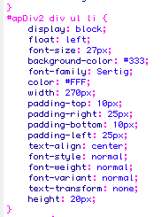
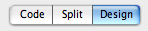
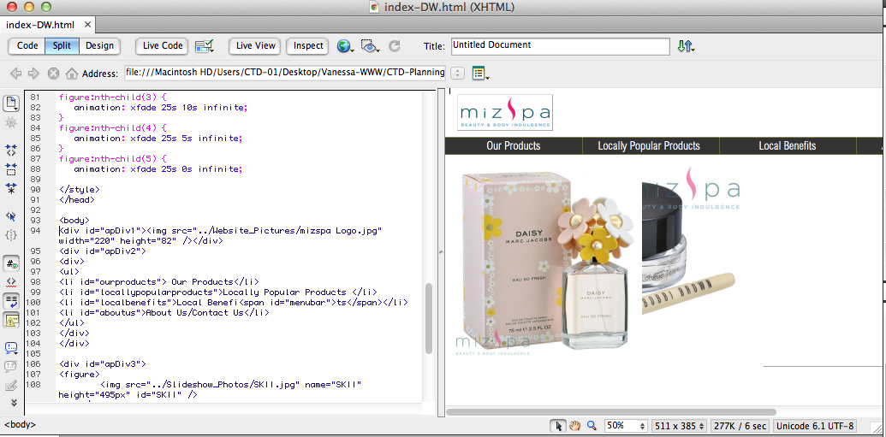

We created a few ideas of the homepage after creating our flowchart. We referenced a lot from other websites. We made wireframes to give the client an idea of the layout of the website and where the content goes.


We chose to use the third wireframe because we want the menu bar to stand out a bit more, because it is our call to action.
This is the storyboard I made in Fireworks.
This is the homepage I made in Dreamweaver.
After working with both Fireworks and Dreamweaver, I found the pros and cons for both programs. Below is a compare and contrast of the two ways of making the homepage.
Comparison between Dreamweaver and Firework
Overall, I prefer using Dreamweaver rather than Fireworks- and these are the reasons why.
- CSS can easily be applied and many things are classified, making it very easy to change a lot of things at the same time. For example, if I don't like the font of a specific list, I can change the font of the whole list at the same time. I have a list as my navigation bar. It is easy to change the font style or size or anything for the whole list just by using one section of CSS.

- The webpage can be made interactive much more easily. If we want to change our components in Fireworks, we need to change the slicing and the image inside the slicing. It is easy to change photos, but very hard to change the layout or formatting. When working with Dreamweaver, we can add apDiv's or delete them which helps a lot if we want to change the layout of the page. However, Dreamweaver has its weaknesses as well because apDivs are in absolute position; it is not very easy to move an image within the div.
- Changes in our coding converted to the page can easily be seen in fireworks through our split code and design. We can immediately see the change in our webpage after changing the code. When we use Fireworks, we need to save our file and then open the webpage on a browser to see if it works, despite the fact that sometimes we do not want to save our file because it might not be what we want.

